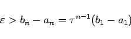

Inhalt Index DeskTop Bronstein

 Optimierung Nichtlineare Optimierung Numerische Suchverfahren Eindimensionale Suche
Optimierung Nichtlineare Optimierung Numerische Suchverfahren Eindimensionale Suche


Das Intervall [a,b] = [a1,b1] wird schrittweise so verkleinert, daß das jeweils neue Teilintervall den Minimalpunkt x* enthält. Im Intervall [a1,b1] werden die Punkte
|  | (18.69) |
kann eine Abschätzung der notwendigen Schrittzahl n gewonnen werden.
Mit dem Verfahren des Goldenen Schnittes wird höchstens eine Funktionswertberechnung mehr benötigt als mit dem FIBONACCI-Verfahren. An Stelle einer Intervallunterteilung gemäß dem Goldenen Schnitt erfolgt hier eine Unterteilung mit Hilfe der FIBONACCI-Zahlen.